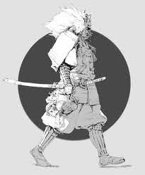
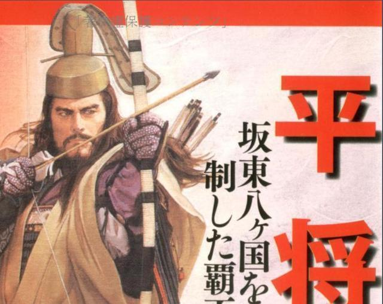
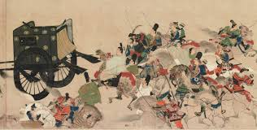
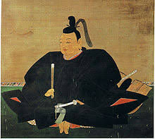
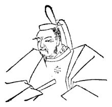

莊園制度
首先要了解武士的歷史，要先了解莊園制度，因為這跟武士的 出現有很大的關係。
莊園制度:
莊園最初要向政府輸租，但在9世紀末以後逐漸免除交租和擺脫 政府控制，稱為不輸不入權。 為此，部分豪族將領地獻予當地貴 族或是寺社，藉此變為莊園主，奉宗主為領家；領家再將庄園獻 給中央的權勢貴族，奉之為本家。EX:當時最具規模與影響力的 本家藤原氏。 隨著莊園的快速增加，莊園與莊園間的衝突愈來愈嚴重，所以一 些有實力的莊園主開始武裝莊民，這些武裝後的莊民通常會按照 階族的刑事組織起來，族長是他們的最高首領稱之為{總領}，成 員則稱之為{從者}，這些人就被稱為{武士}。武士的發展
了解了庄園制度與武士起源，現在就可以更深入的探討武士的發展。
當時最大的武士團:
當時最大的武士團有兩個，分別是平氏、源氏，他們都是皇室的後 代。 8世紀末，桓武天皇推行臣及籍降下政策，大量賜姓給皇族，其中 平氏賜給皇孫，源氏則賜給皇子，平氏還分成桓武平氏、仁明平氏 、文德平氏。其中最廣為人知的是桓武平氏，而最著名的便是清和 源氏。 桓武天皇的孫子平高望在關東地區擔任官職並扎根，從此開啟平氏 家族精彩的故事 平氏內部也從此與地方勢力時常發生衝突，其中最有名的事件是平 將門之亂。 公元939年，平將門是桓武天皇的五氏孫，他在殺死其叔父平國香 以後，在關東地區謀反，還自稱新皇，與朝廷對立，最後被平國香 兒子平貞盛和地方上的藤原氏殺了 同一時間，在四國地區也發生了由藤原氏的藤原純友所帶領的叛亂 最後則是由源經基打敗。 這兩起叛亂幾乎都是在同時承平和天慶年間發生，和稱承平天慶 之亂
因為這兩次叛亂也讓地方貴族發現武士的強大，紛紛聘請他們當自 己的保鑣也就是{侍}。 源氏家族也因為當了當時攝關藤原北家的侍其地位步步高升。 平氏家族在經歷平將門之亂以後雖然實力招到削落，但他們還是關 東地區首屈一指的武士團，1028年平忠常發起叛亂，他一聽到要來 鎮壓他的是源賴信，他就立刻投降了。這件事也使平家衰退。 源氏變成地一大的武士團
1091年為了預防源氏叛亂，朝廷開始禁止庄源領主向源氏供奉土地， 對此，源氏家族發動多次叛亂，由於平氏在討伐源氏有功，平氏開 始復出，平氏也越來越受到天皇的重用。 1156年保源之亂發起
平清盛通過保元之亂使平家勢力達到鼎盛，源義朝不滿受封 官位低於平清盛，他與藤原信賴囚禁白河天皇，平治之亂由 此爆發。 後來失敗了，藤原信賴被殺，源氏也被殺的只剩下年僅13歲 的原賴朝和他弟弟被流放到伊豆半島
後來1180年原賴朝在伊豆半島重新發展了強大的武士團，發生了 源平合戰，源賴朝在一之谷之戰大敗平氏大軍 ，把平氏家族殲滅了。 1192年源賴朝從鳥語天皇處得到「征夷大將軍」的稱號並以當時 所在地鐮倉命名，從此開啟鐮倉幕府時代
攝關政治
剛剛有提到攝關藤原北家，那甚麼氏攝關呢?